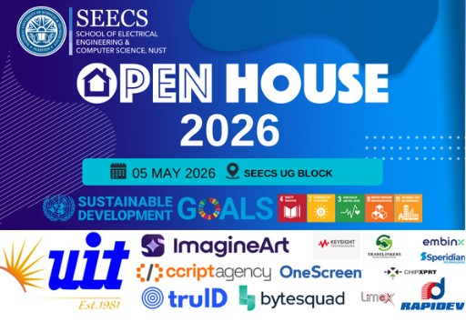

When I'm not coding, I'm usually organizing something. I co-led SEECS Open House 2026, one of NUST's premier academic showcase events, managing cross-functional teams, logistics, and participant engagement from planning through execution.
I was also an organizing member for the ICMAC 2025 conference, contributing to operations and communication management and helping ensure professional execution in a high-profile academic setting. Both experiences have shaped how I approach teamwork and coordination, on top of the technical side of my degree.
As a research intern on PakOS, I work on proposing the architecture for a local Pakistani operating system, conducting comparative analysis on OS design, resource management, and system concepts. I own the file system and system monitoring tools module — a fitting extension of the systems-programming projects I enjoy building on my own time.